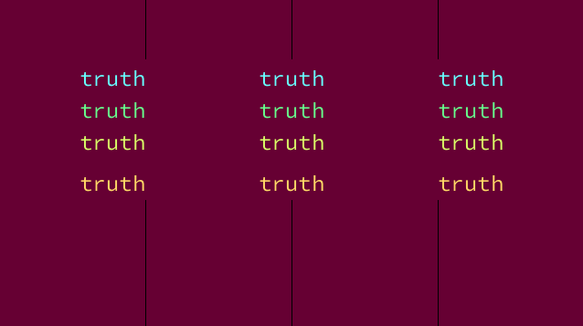
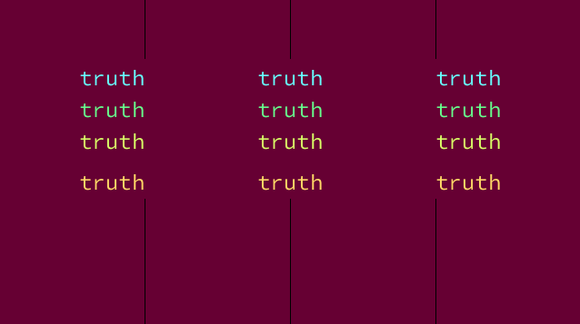
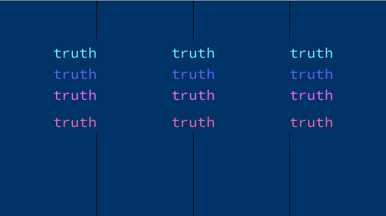
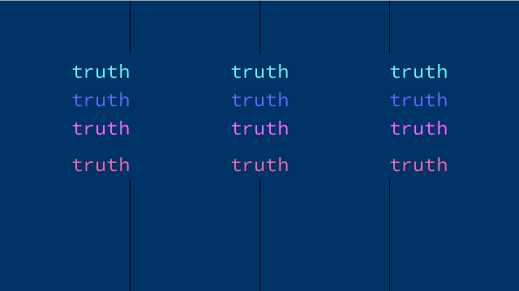
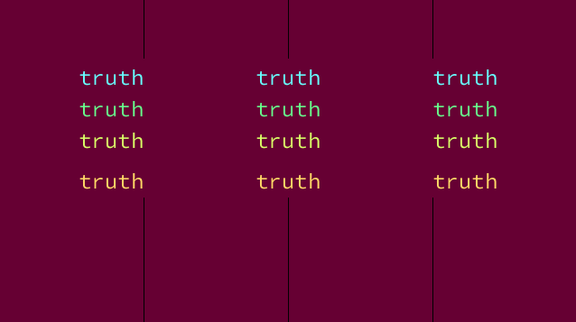
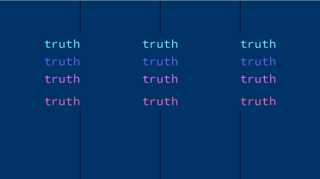

 


I'm Rose
and
I made art...
The images below are an exploration of the program Processing and the theme of Truth.
Truth can mean different things to different people, and the use of different colours is symbolic of the different perceptions of the same truth people may have.
Different versions of the same truth can be as a result of our attitude and values, life experiences as well as our place in the world.

